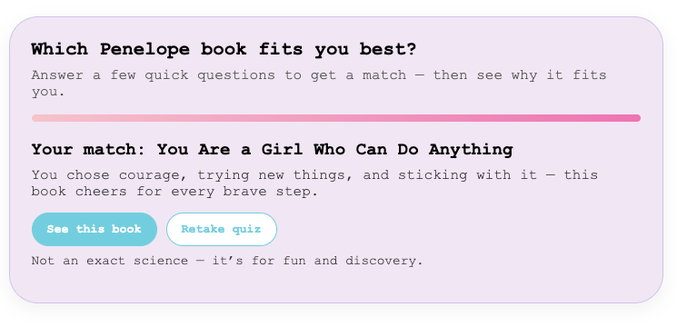

The Challenge
My site lists multiple Penelope books, but new visitors have no easy way to discover which one matches their personality or mood. A plain list felt flat and didn’t invite exploration.
What I Did
- Wrote questions, answers, result descriptions, and microcopy in the JavaScript file.
- Used Penelope’s warm, encouraging voice consistently from start to finish.
- Added small reassuring details (“No wrong answers,” simple progress bar, one question at a time) to keep it light and fast.
- Made each result personal with a custom paragraph + direct Amazon link to the matched book.
Outcome
A fully functional, story-driven quiz that turns casual visitors into readers who instantly know which Penelope book to start with. Live and ready for traffic.
Try the quiz live →Visual Examples
 Question Screen — “Which page would you bookmark?”
Question Screen — “Which page would you bookmark?”

Result Screen — “Your Penelope book match”